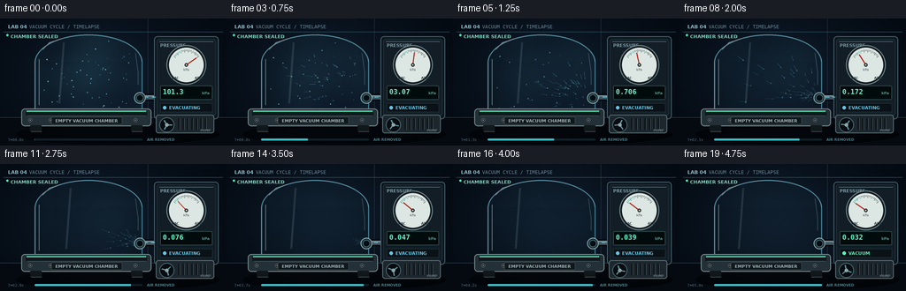
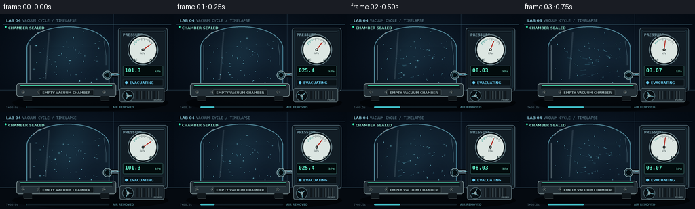

CODING AGENTS AS PIXEL WORLD MODELS
traex/GPT-5.6-Sol · mechanics_0028
点击播放 · 原生 RGB 像素
逐轮保存的候选
回放视频、检查图与代码变化。
每份候选均可单独播放。实际图片检查记录在下方工具轨迹中。
候选 01播放与检查图
点击播放 · 原生 RGB 像素


展开代码变化
--- 上一保存版本
+++ 本次保存版本
@@ -0,0 +1,296 @@
+from pathlib import Path
+import math
+
+import numpy as np
+from PIL import Image, ImageDraw, ImageFont, ImageFilter
+
+import artifact_io
+
+
+# Render large and downsample once for clean glass, type and instrument markings.
+W, H, N, SCALE = 256, 144, 20, 4
+RW, RH = W * SCALE, H * SCALE
+ROOT = Path(__file__).resolve().parent
+FONT = "/usr/share/fonts/truetype/dejavu/DejaVuSans.ttf"
+FONT_BOLD = "/usr/share/fonts/truetype/dejavu/DejaVuSans-Bold.ttf"
+FONT_MONO = "/usr/share/fonts/tru/dejavu/DejaVuSansMono.ttf"
+FONT_MONO_BOLD = "/usr/share/fonts/truetype/dejavu/DejaVuSansMono-Bold.ttf"
+
+
+def sc(v):
+ return int(round(v * SCALE))
+
+
+def box(values):
+ return tuple(sc(v) for v in values)
+
+
+def pts(values):
+ return [(sc(x), sc(y)) for x, y in values]
+
+
+def font(size, bold=False, mono=False):
+ path = FONT_MONO_BOLD if (bold and mono) else FONT_MONO if mono else FONT_BOLD if bold else FONT
+ return ImageFont.truetype(path, sc(size))
+
+
+def text(draw, xy, value, size, fill, bold=False, mono=False, anchor=None, spacing=1):
+ draw.text(box(xy), value, font=font(size, bold, mono), fill=fill,
+ anchor=anchor, spacing=sc(spacing))
+
+
+def smoothstep(x):
+ x = max(0.0, min(1.0, x))
+ return x * x * (3.0 - 2.0 * x)
+
+
+def add_glow(im, primitive, color, blur=5):
+ layer = Image.new("RGBA", (RW, RH), (0, 0, 0, 0))
+ primitive(ImageDraw.Draw(layer), color)
+ layer = layer.filter(ImageFilter.GaussianBlur(sc(blur)))
+ im.alpha_composite(layer)
+
+
+def gradient_background(frame_index):
+ yy, xx = np.mgrid[0:RH, 0:RW]
+ yn = yy / max(1, RH - 1)
+ xn = xx / max(1, RW - 1)
+ # Cool laboratory wall, with the central chamber in a soft pool of light.
+ spotlight = np.exp(-(((xn - .44) / .46) ** 2 + ((yn - .43) / .62) ** 2) * 2.0)
+ vignette = np.clip(((xn - .5) ** 2 + (yn - .48) ** 2) * 1.3, 0, 1)
+ r = 6 + 9 * spotlight - 4 * vignette
+ g = 13 + 16 * spotlight - 5 * vignette
+ b = 22 + 22 * spotlight - 7 * vignette
+ # Very subtle stable film grain prevents perfectly flat synthetic surfaces.
+ rng = np.random.default_rng(8801 + frame_index)
+ grain = rng.normal(0, .7, (RH, RW))
+ arr = np.stack([r + grain, g + grain, b + grain * .8], axis=-1)
+ return Image.fromarray(np.uint8(np.clip(arr, 0, 255)), "RGB").convert("RGBA")
+
+
+def chamber_mask():
+ mask = Image.new("L", (RW, RH), 0)
+ d = ImageDraw.Draw(mask)
+ d.ellipse(box((40, 19, 160, 82)), fill=255)
+ d.rectangle(box((40, 48, 160, 106)), fill=255)
+ return mask
+
+
+CHAMBER_MASK = chamber_mask()
+
+
+# Stable initial locations for the visible air tracers. They are illustrative
+# motes in otherwise empty air, not contents placed in the chamber.
+rng = np.random.default_rng(24117)
+PARTICLES = []
+while len(PARTICLES) < 58:
+ x = float(rng.uniform(48, 152))
+ y = float(rng.uniform(28, 101))
+ # Keep points beneath the domed roof.
+ roof = 22 + 27 * (abs(x - 100) / 58) ** 1.75
+ if y > roof:
+ PARTICLES.append((x, y, float(rng.random()), float(rng.uniform(.35, 1.0)), int(rng.integers(0, 3))))
+
+
+def render_frame(index):
+ t = index / (N - 1)
+ # A fast pump-down curve: visually readable at first and genuinely near-zero at the end.
+ vacuum = (1.0 - math.exp(-3.45 * t)) / (1.0 - math.exp(-3.45))
+ pressure = 101.3 * (10.0 ** (-3.50 * vacuum))
+ im = gradient_background(index)
+ d = ImageDraw.Draw(im, "RGBA")
+
+ # Architectural wall seams and an understated header.
+ d.line(pts([(0, 112), (256, 112)]), fill=(48, 73, 88, 95), width=sc(.55))
+ d.line(pts([(0, 113), (256, 113)]), fill=(2, 6, 12, 180), width=sc(1))
+ d.line(pts([(167, 0), (167, 112)]), fill=(36, 56, 72, 70), width=sc(.5))
+ d.line(pts([(4, 15), (252, 15)]), fill=(58, 93, 110, 35), width=sc(.5))
+ text(d, (9, 6), "LAB 04", 5.5, (132, 191, 207, 185), bold=True)
+ text(d, (33, 6), "VACUUM CYCLE / TIMELAPSE", 5.5, (102, 135, 149, 150), mono=True)
+ d.ellipse(box((7, 17.5, 9.5, 20)), fill=(52, 236, 175, 210))
+ text(d, (12, 17.2), "CHAMBER SEALED", 5.2, (132, 210, 190, 185), bold=True)
+
+ # Floor and cast shadows.
+ floor = Image.new("RGBA", (RW, RH), (0, 0, 0, 0))
+ fd = ImageDraw.Draw(floor, "RGBA")
+ fd.rectangle(box((0, 113, 256, 144)), fill=(5, 10, 16, 255))
+ fd.ellipse(box((18, 119, 248, 143)), fill=(0, 0, 0, 150))
+ im.alpha_composite(floor)
+ d = ImageDraw.Draw(im, "RGBA")
+
+ # Vacuum pipe behind the glass and controller.
+ d.line(pts([(154, 89), (174, 89), (181, 96), (181, 112)]),
+ fill=(3, 7, 11, 240), width=sc(8))
+ d.line(pts([(154, 89), (174, 89), (181, 96), (181, 112)]),
+ fill=(66, 86, 98, 255), width=sc(5))
+ d.line(pts([(154, 87.8), (173, 87.8), (182.2, 96)]),
+ fill=(151, 178, 185, 115), width=sc(.8))
+
+ # Controller cabinet.
+ d.rounded_rectangle(box((174, 20, 247, 114)), radius=sc(4), fill=(13, 22, 29, 255),
+ outline=(72, 94, 104, 235), width=sc(1))
+ d.rounded_rectangle(box((177, 23, 244, 110)), radius=sc(3), fill=(18, 29, 37, 255),
+ outline=(26, 47, 58, 255), width=sc(1))
+ d.line(pts([(180, 26), (241, 26)]), fill=(111, 145, 154, 80), width=sc(.5))
+ text(d, (181, 27.5), "PRESSURE", 5, (119, 155, 167, 205), bold=True)
+
+ # Analog pressure gauge with a physically suggestive logarithmic sweep.
+ gx, gy, gr = 210.5, 52.5, 20.5
+ add_glow(im, lambda gd, c: gd.ellipse(box((gx-gr, gy-gr, gx+gr, gy+gr)), outline=c, width=sc(1)),
+ (43, 169, 202, 45), 3)
+ d = ImageDraw.Draw(im, "RGBA")
+ d.ellipse(box((gx-gr-2, gy-gr-2, gx+gr+2, gy+gr+2)), fill=(5, 10, 14, 255),
+ outline=(102, 125, 132, 255), width=sc(1.2))
+ d.ellipse(box((gx-gr, gy-gr, gx+gr, gy+gr)), fill=(220, 230, 226, 255),
+ outline=(24, 38, 43, 255), width=sc(1))
+ # Colored safe-vacuum arc.
+ for j in range(22):
+ a0 = math.radians(-145 + j * (110 / 21))
+ rr = gr - 3.2
+ x1, y1 = gx + math.cos(a0) * rr, gy + math.sin(a0) * rr
+ x2, y2 = gx + math.cos(a0) * (rr - (2.8 if j % 3 == 0 else 1.6)), gy + math.sin(a0) * (rr - (2.8 if j % 3 == 0 else 1.6))
+ col = (42, 146, 136, 255) if j < 7 else (71, 85, 88, 225)
+ d.line(pts([(x1, y1), (x2, y2)]), fill=col, width=sc(.6))
+ text(d, (194, 65.2), "VAC", 3.8, (33, 54, 57, 255), bold=True)
+ text(d, (220, 65.2), "ATM", 3.8, (33, 54, 57, 255), bold=True)
+ text(d, (gx, 58.0), "kPa", 3.7, (65, 78, 80, 255), anchor="mm")
+ angle = math.radians(-35 - 110 * vacuum)
+ nx, ny = gx + math.cos(angle) * 14, gy + math.sin(angle) * 14
+ d.line(pts([(gx, gy), (nx, ny)]), fill=(179, 42, 33, 255), width=sc(1.25))
+ d.ellipse(box((gx-2.0, gy-2.0, gx+2.0, gy+2.0)), fill=(48, 53, 52, 255), outline=(8, 12, 13, 255))
+ d.ellipse(box((gx-.7, gy-.7, gx+.7, gy+.7)), fill=(205, 210, 204, 255))
+
+ # Digital gauge. Use scientific-looking precision only once the pressure is low.
+ d.rounded_rectangle(box((181, 76, 240, 92)), radius=sc(1.7), fill=(2, 11, 12, 255),
+ outline=(45, 84, 82, 255), width=sc(.7))
+ if pressure >= 10:
+ readout = f"{pressure:05.1f}"
+ elif pressure >= 1:
+ readout = f"{pressure:05.2f}"
+ else:
+ readout = f"{pressure:05.3f}"
+ text(d, (184, 78.4), readout, 7.8, (101, 245, 205, 255), bold=True, mono=True)
+ text(d, (237, 84.4), "kPa", 4.2, (80, 150, 133, 235), bold=True, anchor="rm")
+ d.rectangle(box((181, 96, 240, 106)), fill=(10, 18, 23, 255), outline=(39, 57, 65, 255), width=sc(.5))
+ state = "VACUUM" if index == N - 1 else "EVACUATING"
+ state_col = (92, 244, 178, 255) if index == N - 1 else (100, 196, 230, 255)
+ d.ellipse(box((184, 99, 188, 103)), fill=state_col)
+ text(d, (191, 98.2), state, 5.1, state_col, bold=True)
+
+ # Pump motor below the controller; fan blur and a rotating central hub sell the timelapse.
+ d.rounded_rectangle(box((176, 109, 242, 130)), radius=sc(3), fill=(27, 38, 45, 255),
+ outline=(87, 105, 111, 255), width=sc(1))
+ for x in range(202, 235, 5):
+ d.line(pts([(x, 113), (x, 126)]), fill=(9, 15, 19, 220), width=sc(1.4))
+ d.line(pts([(x+.9, 113), (x+.9, 126)]), fill=(84, 98, 101, 100), width=sc(.45))
+ d.ellipse(box((180, 112, 197, 129)), fill=(7, 13, 17, 255), outline=(75, 100, 108, 255), width=sc(1))
+ for blade in range(3):
+ a = index * 1.45 + blade * 2 * math.pi / 3
+ ex, ey = 188.5 + math.cos(a) * 6.0, 120.5 + math.sin(a) * 6.0
+ d.line(pts([(188.5, 120.5), (ex, ey)]), fill=(91, 144, 155, 210), width=sc(1.5))
+ d.ellipse(box((186.5, 118.5, 190.5, 122.5)), fill=(139, 166, 169, 255))
+ text(d, (238, 128), "PUMP", 3.5, (107, 127, 132, 180), bold=True, anchor="rs")
+
+ # Air inside the transparent chamber: low-contrast volume haze vanishes as pressure falls.
+ haze_strength = (1.0 - vacuum) ** .72
+ yy, xx = np.mgrid[0:RH, 0:RW]
+ pattern = (0.52 + 0.20 * np.sin(xx / sc(13) + 0.45 * index)
+ + 0.15 * np.sin((xx + yy) / sc(19) - .23 * index)
+ + 0.13 * np.cos(yy / sc(10)))
+ alpha = np.asarray(CHAMBER_MASK, dtype=np.float32) / 255.0
+ alpha = np.uint8(np.clip(alpha * pattern * 31 * haze_strength, 0, 35))
+ air_arr = np.zeros((RH, RW, 4), dtype=np.uint8)
+ air_arr[:, :, 0] = 73
+ air_arr[:, :, 1] = 161
+ air_arr[:, :, 2] = 187
+ air_arr[:, :, 3] = alpha
+ im.alpha_composite(Image.fromarray(air_arr, "RGBA"))
+
+ # Air motes curve toward the side port in waves, leaving an empty clear chamber.
+ particle_layer = Image.new("RGBA", (RW, RH), (0, 0, 0, 0))
+ pd = ImageDraw.Draw(particle_layer, "RGBA")
+ for i, (x0, y0, phase, brightness, rad) in enumerate(PARTICLES):
+ start = .04 + .69 * phase
+ local = max(0.0, min(1.0, (vacuum - start) / max(.01, 1.0 - start)))
+ e = smoothstep(local)
+ swirl = math.sin(local * 7.0 + phase * 9.0 + index * .12) * 6.5 * (1.0 - e)
+ x = x0 + (155.0 - x0) * e
+ y = y0 + (90.0 - y0) * e + swirl
+ fade = (1.0 - local ** 5) * (.42 + .58 * haze_strength)
+ if fade <= .035:
+ continue
+ r = (.32 + .17 * rad) * (1 - .22 * e)
+ col = (138, 227, 242, int(205 * brightness * fade))
+ if local > .08:
+ prev_e = smoothstep(max(0.0, local - .055))
+ px = x0 + (155.0 - x0) * prev_e
+ py = y0 + (90.0 - y0) * prev_e + math.sin(max(0, local-.055)*7 + phase*9 + index*.12)*6.5*(1-prev_e)
+ pd.line(pts([(px, py), (x, y)]), fill=(95, 205, 231, int(115 * fade)), width=sc(.45))
+ pd.ellipse(box((x-r, y-r, x+r, y+r)), fill=col)
+ particle_layer = particle_layer.filter(ImageFilter.GaussianBlur(sc(.12)))
+ im.alpha_composite(particle_layer)
+
+ d = ImageDraw.Draw(im, "RGBA")
+ # Moving streaks inside the extraction line.
+ if index < N - 1:
+ flow_alpha = int(80 + 110 * math.sin(math.pi * min(1, t/.9)))
+ for k in range(3):
+ fx = 155 + ((index * 4.1 + k * 8.2) % 23)
+ if fx <= 174:
+ d.line(pts([(fx, 89), (min(fx + 4.5, 176), 89)]), fill=(91, 224, 239, flow_alpha), width=sc(.7))
+
+ # Blue-tinted glass body. The near-invisible fill and strong edge reflections preserve transparency.
+ glass = Image.new("RGBA", (RW, RH), (0, 0, 0, 0))
+ gd = ImageDraw.Draw(glass, "RGBA")
+ gd.ellipse(box((39, 18, 161, 82)), fill=(81, 171, 200, 7), outline=(131, 214, 234, 145), width=sc(1.25))
+ gd.rectangle(box((39, 49, 161, 104)), fill=(69, 151, 183, 5))
+ # Hide ellipse lower outline and redraw continuous walls.
+ gd.rectangle(box((40.5, 49, 159.5, 84)), fill=(54, 129, 165, 5))
+ gd.line(pts([(39.5, 49), (39.5, 104)]), fill=(123, 207, 228, 165), width=sc(1.2))
+ gd.line(pts([(160.5, 49), (160.5, 104)]), fill=(107, 193, 219, 140), width=sc(1.2))
+ gd.line(pts([(44, 46), (44, 98)]), fill=(225, 250, 255, 96), width=sc(1.1))
+ gd.line(pts([(48, 35), (56, 27), (69, 23)]), fill=(238, 253, 255, 125), width=sc(1.0))
+ gd.line(pts([(153, 39), (156, 61), (156, 75)]), fill=(177, 230, 242, 70), width=sc(.7))
+ # A narrow moving highlight suggests glass curvature rather than opaque plastic.
+ hx = 72 + 8 * math.sin(t * math.pi)
+ gd.line(pts([(hx, 27), (hx - 5, 96)]), fill=(203, 244, 255, 32), width=sc(2.2))
+ im.alpha_composite(glass)
+ d = ImageDraw.Draw(im, "RGBA")
+
+ # Side port, valve collar, and genuinely sealed bottom flange.
+ d.ellipse(box((151.5, 83.5, 164.5, 96.5)), fill=(33, 48, 55, 255), outline=(132, 164, 170, 255), width=sc(1))
+ d.ellipse(box((154, 86, 162, 94)), fill=(4, 13, 17, 255), outline=(68, 119, 130, 255), width=sc(.8))
+ d.rounded_rectangle(box((24, 102, 171, 122)), radius=sc(4), fill=(36, 48, 55, 255),
+ outline=(118, 137, 140, 255), width=sc(1))
+ d.rectangle(box((29, 105, 166, 110)), fill=(14, 24, 29, 255))
+ d.line(pts([(30, 105), (165, 105)]), fill=(79, 244, 191, 140), width=sc(1.25))
+ d.line(pts([(31, 110), (165, 110)]), fill=(80, 99, 105, 160), width=sc(.6))
+ for bx in (34, 57, 80, 104, 128, 153):
+ d.ellipse(box((bx-2, 113, bx+2, 117)), fill=(8, 14, 17, 255), outline=(126, 144, 145, 255), width=sc(.6))
+ d.ellipse(box((bx-.55, 114.45, bx+.55, 115.55)), fill=(190, 202, 199, 210))
+ d.rounded_rectangle(box((58, 111.5, 138, 120)), radius=sc(1), fill=(17, 25, 29, 255), outline=(69, 84, 88, 255), width=sc(.5))
+ text(d, (98, 116), "EMPTY VACUUM CHAMBER", 4.65, (158, 178, 180, 235), bold=True, anchor="mm")
+ # Feet.
+ d.rounded_rectangle(box((34, 121, 47, 128)), radius=sc(1.3), fill=(17, 24, 28, 255))
+ d.rounded_rectangle(box((148, 121, 161, 128)), radius=sc(1.3), fill=(17, 24, 28, 255))
+ d.line(pts([(35, 128), (47, 128)]), fill=(94, 109, 111, 170), width=sc(.6))
+ d.line(pts([(149, 128), (161, 128)]), fill=(94, 109, 111, 170), width=sc(.6))
+
+ # Timeline-like pressure indicator, small enough to feel diegetic.
+ text(d, (9, 135), f"T+{t*5:04.1f}s", 4.2, (83, 113, 124, 190), mono=True)
+ d.rounded_rectangle(box((39, 136, 161, 138.2)), radius=sc(1), fill=(17, 30, 37, 230))
+ d.rounded_rectangle(box((39, 136, 39 + 122*vacuum, 138.2)), radius=sc(1), fill=(62, 185, 194, 220))
+ text(d, (166, 135), "AIR REMOVED", 4.0, (74, 126, 137, 180), bold=True)
+
+ # Downsample and ensure strict RGB uint8 output.
+ im = im.convert("RGB").resize((W, H), Image.Resampling.LANCZOS)
+ return np.asarray(im, dtype=np.uint8)
+
+
+def main():
+ frames = np.stack([render_frame(i) for i in range(N)], axis=0)
+ artifact_io.save(frames, ROOT)
+
+
+if __name__ == "__main__":
+ main()
可观测工具轨迹
实际执行的命令与返回图片。
命令 1exit 0
/bin/bash -lc "cat prompt.txt && printf '\\n--- GENERATION_RULES.md ---\\n' && cat GENERATION_RULES.md && printf '\\n--- task_spec.json ---\\n' && cat task_spec.json"
命令 2exit 0
/bin/bash -lc "printf '%s\\n' '--- files ---'; find . -maxdepth 3 -type f -printf '%p %s bytes\\n' | sort; printf '%s\\n' '--- executables ---'; command -v ffmpeg || true; command -v python3 || true; command -v blender || true; command -v convert || true; printf '%s\\n' '--- python packages ---'; python3 - <<'PY' mods=['PIL','numpy','cv2','imageio','moviepy','cairo','moderngl'] for m in mods: try: x=__import__(m); print(m, getattr(x,'__version__','ok')) except Exception as e: print(m, 'NO', type(e).__name__) PY"
命令 3exit 0
/bin/bash -lc 'cat artifact_io.py'
命令 4exit 0
/bin/bash -lc 'fc-list 2>/dev/null | head -20 || true'
命令 5exit 0
/bin/bash -lc 'python3 generate.py'
命令 6exit 0
/bin/bash -lc "python3 - <<'PY'
from pathlib import Path
import numpy as np
from PIL import Image
p=Path('.')
z=np.load('pixels.npz')['pixels']
print('packed tensor:', z.shape, z.dtype)
frames=[]
for f in sorted(Path('frames').glob('*.png')):
a=np.asarray(Image.open(f))
frames.append(a)
print('png count:',len(frames),'shape/dtype:',frames[0].shape,frames[0].dtype)
for i in [0,1,5,10,15,19]:
a=frames[i]
print(i,'mean',a.mean(axis=(0,1)).round(2),'range',a.min(),a.max())
for a,b in zip(frames,frames[1:]):
pass
diffs=np.array([np.mean(np.abs(frames[i].astype(float)-frames[i-1].astype(float))) for i in range(1,20)])
print('temporal MAD:',np.round(diffs,2).tolist())
print('all frames unique:',len({x.tobytes() for x in frames})==20)
for name in ['pixels.npz','inspection.png','transition_check.png','index.html','generate.py']:
q=Path(name); print(name,q.exists(),q.stat().st_size if q.exists() else '-')
PY"命令 7exit 0
/bin/bash -lc 'python3 -m py_compile generate.py artifact_io.py && git status --short 2>/dev/null || true'
保存候选 1 份；完成命令 7 次；可验证图片返回 0 张。原始 API 响应与完整日志保留在本地。